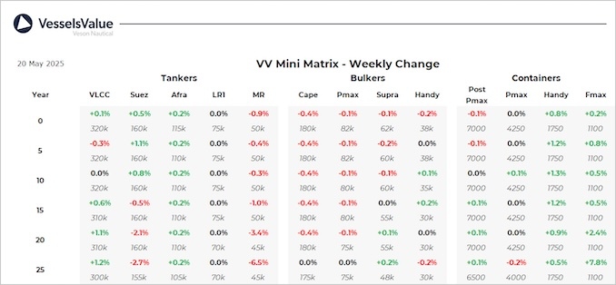

Bulkers:Bulker values have remained stable this week
Capesize BC Nicholas GS (179,200 DWT, Jul 2010, Sungdong) sold SS Due to unknown Chinese buyers for USD 27.5 mil, VV Value USD 27.89 mil
Supramax BC NS Dilian (57,000 DWT, Sep 2010, Yangzhou Guoyu Shipbuilding) sold SS/DD Due to unknown Chinese buyers for USD 9.9 mil, VV Value USD 10.5 mil
Supramax BC SFL Sara (57,000 DWT, Feb 2011, Xiamen Shipbuilding Ind) sold to unknown Chinese buyers for USD 11.5 mil, VV Value USD 11.28 mil
Handy BC Nymphi (28,200 DWT, Apr 2012, I-S) sold DD Due to ADNOC Logistics and Services for USD 11.5 mil, VV Value USD 10.87 mil
Handy BC Amstel Confidence (38,500 DWT, Nov 2011, Minami Nippon) sold DD Passed to undisclosed buyers for USD 14.3 mil, VV Value USD 14.21 mil
Tankers:Tanker values have seen some fluctuation over the last week mainly owing to recent deals
VLCC Maran Canopus (320,500 DWT, Sep 2007, Daewoo) on subs to Unknown Chinese for USD 50 mil, VV Value USD 47.24 mil
VLCC New Naxos (300,000 DWT, Sep 2003, Universal) sold DD Due to Unknown Singaporean for USD 33 mil, VV Value USD 33.1 mil
Suezmax Nordic Castor (150,200 DWT, Jul 2004, Universal) sold to undisclosed buyers for USD 23 mil, VV Value USD 25.31 mil
MR2 Anna M (48,000 DWT, Feb 2010, Iwagi Zosen) sold SS/DD Due to undisclosed buyers for USD 17.4 mil, VV Value USD 17.42 mil
MR2 (Chemical/Product) Grace Leo (47,400 DWT, Apr 2009, Onomichi Dockyard) sold to Unknown Turkish buyers for USD 16 mil, VV Value USD 16.47 mil
Containers:Older Feedermaxes have firmed further this week, alongside midage Handys and Sub Panamaxes also going up
Handy Containers Ela (1,696 TEU, Apr 2012, Guangzhou) and Kestrel (1,809 TEU, May 2013, CSBC) sold to Erasmus for mid 40s en bloc, VV Value USD 43.7 mil en bloc.
Feedermax Rachel Borchard (1,216 TEU, Jun 2000, Hanjin HI) sold for USD 6.8 mil, VV Value USD 6.1 mil.
